Opções no Menu de Contexto
Verificar Qtde dos itens
A opção Verificar Qtde dos itens está disponível tanto para o status planejada quanto liberada, com esta opção é possível acessar a tela Verificação de quantidades dos itens da Ordem de Produção onde mostrará uma lista com todos os componentes da OP e as suas quantidades.
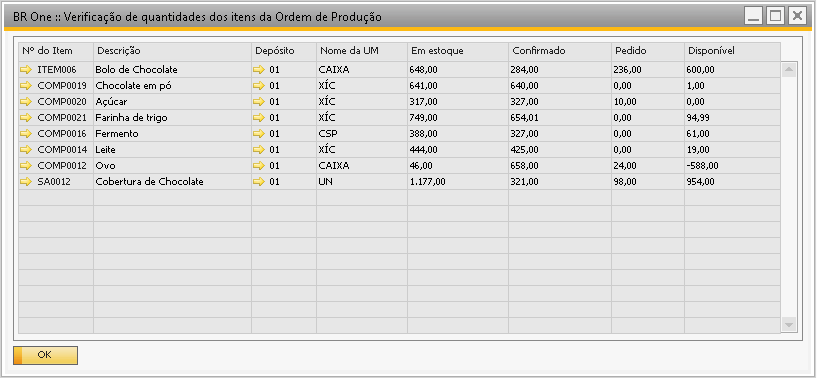 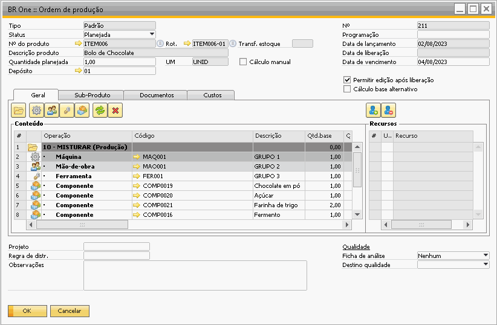{kind=link}
{kind=link}
Relatório de Apontamentos
Esta opção exibirá o relatório de apontamentos realizados na Ordem de Produção (OP). Mesmo que ainda não haja nenhum apontamento registrado, o relatório será aberto para validação. As colunas exibidas no relatório são: Qtde. planejada, Qtde. apontada, Qtde refugo, Qtde. pendente, Tempo planejado e Tempo apontado.
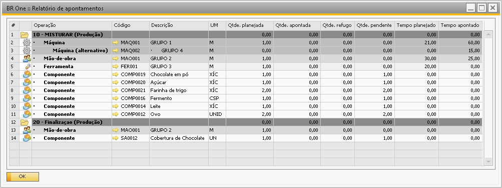{kind=link}
Pedido de transf. de estoque
Esta funcionalidade permite criar um pedido de transferência de estoque para os componentes da OP. Por padrão ao abrir a tela, os componentes da OP serão carregados automaticamente, assim como os campos Depósito origem, Depósito destino e Quantidade.
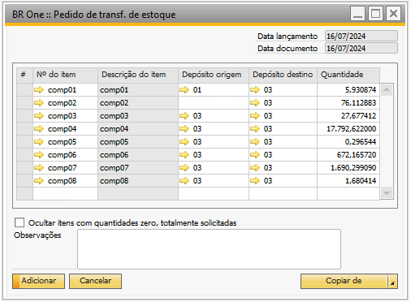{kind=link}
Depósito de origem: será carregado automaticamente conforme Depósito padrão do item, caso esse depósito tenha filial igual à da OP, caso componente não possua um depósito padrão, campo virá em branco.
Quando a filial do depósito padrão do item for diferente da filial do depósito informado na OP, o add-on irá olhar a configuração De/Para da tela Configuração de depósitos para referência, onde o add-on irá considerar as regras abaixo:
Filial De: Deve ser referente a filial do depósito padrão do item.
Filial Para: Seve ser referente a filial da OP.
Se não encontrar no De/Para, deve-se trazer o campo em branco.
{kind=link}
Depósito destino: Será preenchido automaticamente conforme depósito informado na linha do componente na OP.
Quantidade: Será preenchido conforme quantidade planejada para o componente.
Apesar das informações da OP serem carregadas automaticamente, é possível também eliminar ou inserir linhas para remover ou incluir um componente manualmente no pedido de transferência de estoque.

Porém, ao inserir manualmente uma linha, será carregado automaticamente apenas o campo ‘Depósito origem’, conforme regras citadas acima.
Também é possível pelo botão Copiar de -> Ordem de produção buscar a estrutura de componentes de outra ordem de produção.

Caso a opção Ocultar itens com quantidades zero, totalmente solicitadas seja marcada, a tela será recarregada e os itens que tiverem quantidade zero não serão exibidos. Com a flag desmarcada, serão exibidos todos os itens, independentemente da quantidade.
É possível também criar um Pedido de transferência de estoque utilizando o Terminal de apontamento, o comportamento será igual ao demonstrado acima.
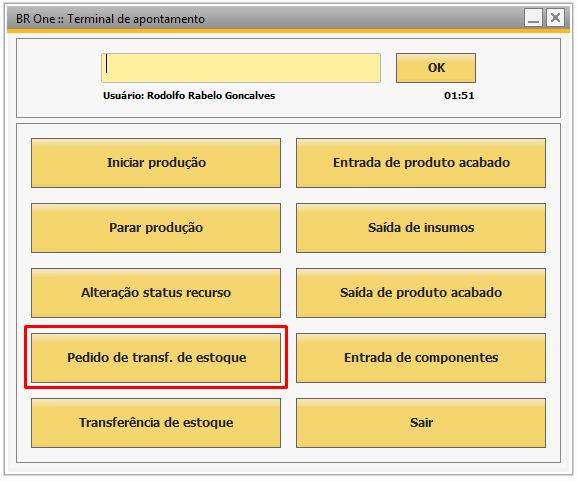{kind=link}
Ao realizar um pedido de transferência de estoque pela Ordem de Produção (OP), não será possível alterar o status da OP novamente para Planejada. Nesse caso, a seguinte mensagem de validação será exibida, impedindo a alteração de status:
BR One :: Status não pode ser alterado de ‘Liberada’ para ‘Planejada’, pois já foram realizados apontamentos e/ou movimentações para esta OP.
A alteração de status só será possível caso o Pedido de Transferência de Estoque tenha sido cancelado.
Transferência de estoque
Esta funcionalidade permite criar uma transferência de estoque para os componentes da OP. Por padrão ao abrir a tela, os componentes da OP serão carregados automaticamente, assim como os campos Depósito origem, Depósito destino e Quantidade.
{kind=link}
Depósito de origem: será carregado automaticamente conforme Depósito padrão do item, caso esse depósito tenha filial igual à da OP, caso componente não possua um depósito padrão, campo virá em branco.
Quando a filial do depósito padrão do item for diferente da filial do depósito informado na OP, o add-on irá olhar a configuração De/Para da tela Configuração de depósitos para referência, onde o add-on irá considerar as regras abaixo:
Filial De: deve ser referente a filial do depósito padrão do item.
Filial Para: deve ser referente a filial da OP.
Se não encontrar no De/Para, deve-se trazer o campo em branco.
Depósito destino: Será preenchido automaticamente conforme depósito informado na linha do componente na OP.
Quantidade: Será preenchido conforme quantidade planejada para o componente.
Apesar das informações da OP serem carregadas automaticamente, é possível também eliminar ou inserir linhas para remover ou incluir um componente manualmente na transferência de estoque.

Porém, ao inserir manualmente uma linha, será carregado automaticamente apenas o campo Depósito origem, conforme regras citadas acima.
Também é possível pelo botão Copiar de -> Ordem de produção buscar a estrutura de componentes de outra ordem de produção.

Caso a opção Ocultar itens com quantidades zero, totalmente solicitadas seja marcada, a tela será recarregada e os itens que tiverem quantidade zero não serão exibidos. Com a flag desmarcada, serão exibidos todos os itens, independentemente da quantidade.
É possível também criar uma Transferência de estoque utilizando o Terminal de apontamento, o comportamento será igual ao demonstrado acima.
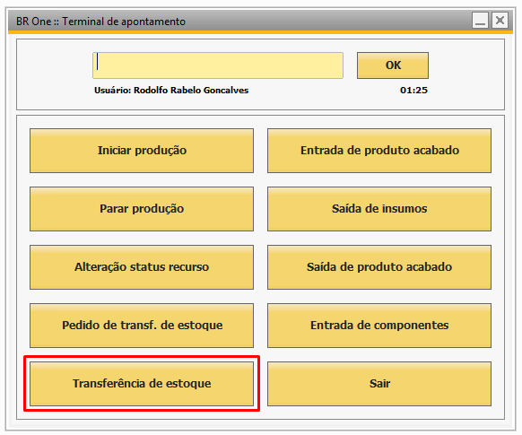{kind=link}
Ao realizar uma transferência de estoque pela Ordem de Produção (OP), não será possível alterar o status da OP novamente para Planejada. Nesse caso, a seguinte mensagem de validação será exibida, impedindo a alteração de status:
BR One :: Status não pode ser alterado de ‘Liberada’ para ‘Planejada’, pois já foram realizados apontamentos e/ou movimentações para esta OP.
A alteração de status só será possível caso o Transferência de Estoque tenha sido cancelado.
Saída de mercadoria
Para realizar a saída de insumo, basta informar o nº da OP e a operação, e ao preencher as linhas com os componentes dessa operação, a quantidade do(s) item(ns) também será carregada automaticamente.
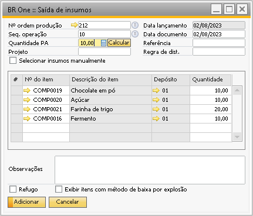{kind=link}
O CFL do campo Nº ordem produção será carregado da seguinte forma:
Campo Vazio: Apresentará as 100 primeiras OPs para seleção.
Campo com *: Apresentará todas as OPs disponíveis para saída de insumos.
Campo com Filtro: Apresentará todas as OPs de acordo com o filtro informado.
OPs que possuem a flag ignorar no fechamento de custos marcada não serão carregadas no CFL.
Ao adicionar a saída de insumos que não seja refugo, o sistema cria um documento de saída de mercadoria para dar baixa no componente.
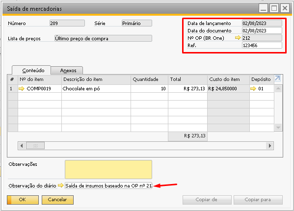{kind=link}
Se a saída for referente a refugo, basta marcar a flag Refugo. A coluna Classificação refugo aparecerá na grid, e os itens serão calculados de acordo com ela, ao clicar no botão Calcular.
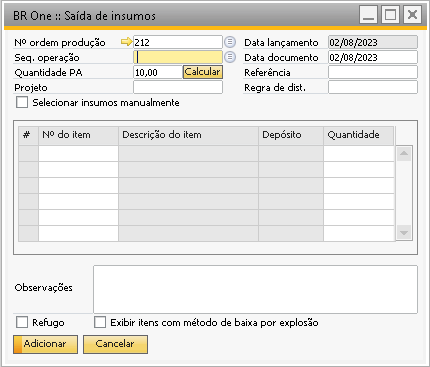{kind=link}
Quando a opção de refugo é marcada, clicamos em calcular as quantidades dos itens serão recalculadas de acordo com a quantidade de PA. Por exemplo, se a quantidade base do componente for 0,006 e no campo Quantidade PA for digitado 2, a quantidade do item será recalculada com o valor 0,012( 2 * 0,006 = 0,012).
É possível inserir uma nova linha na grid para adicionar um componente mas se a flag Exibir itens com método de baixa por explosão estiver desmarcada, somente aparecerão itens com baixa Manual. Se ele estiver marcado, aparecerão tanto itens com baixa Manual como Baixa por explosão. A flag Refugo não interfere nos itens que poderão ser inseridos na grid.
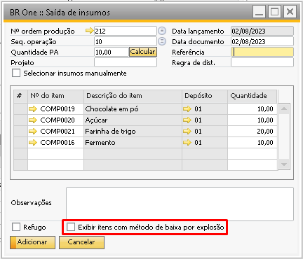{kind=link}
Existe a possibilidade de realizar o apontamento para um item alternativo (previamente cadastrado na tela Estoque > Administração de itens > Itens alternativos).
Para isto, basta que a flag Permitir edição após liberação esteja marcada na OP que será feita a saída de insumos e que seja pressionado a sequência CTRL + TAB no código do item para o qual se deseja que seja carregada a lista de itens alternativos. Para inserir um item alternativo, o item principal pode ou não estar cancelado.
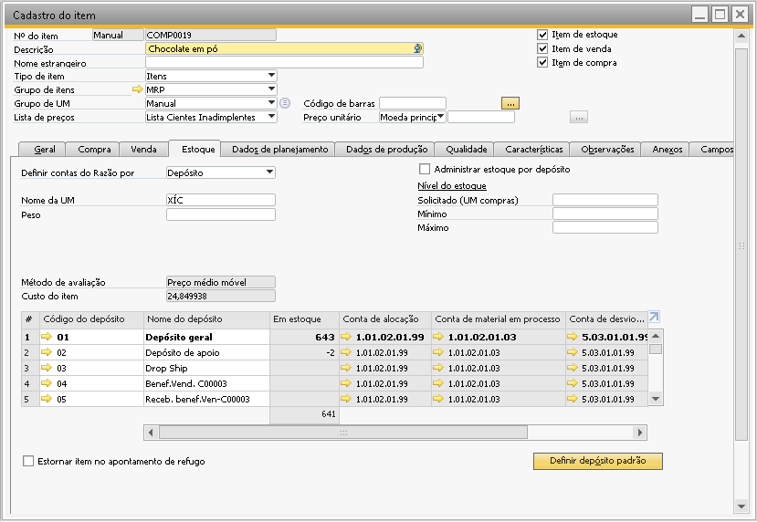{kind=link}
Caso o usuário insira alguma informação no campo Referência, esta informação será levada para o campo ref. da saída de mercadoria gerada.
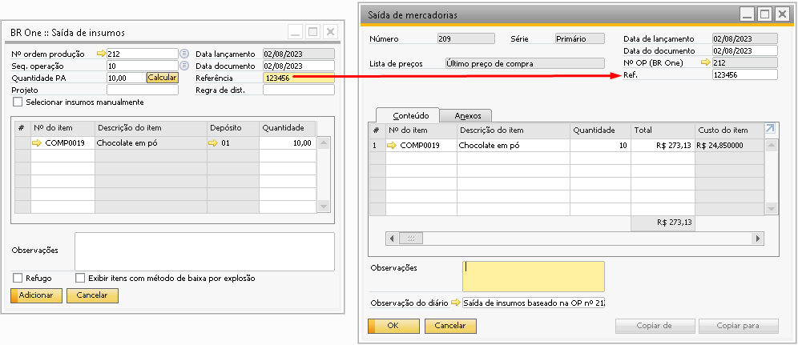{kind=link}
Quando o parâmetro Selecionar insumos manualmente estiver marcado, após o usuário informar a sequência de operação, os insumos não serão carregados na grid, sendo necessário inserir uma nova linha e selecioná-los manualmente. O parâmetro Seleção manual de insumos da aba saída de insumos das configurações de produção vai definir se este campo virá marcado ou não. A flag pode ser marcada ou desmarcada a qualquer momento.
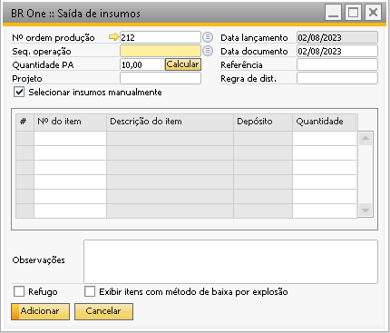{kind=link}
Considerações sobre o processo de saída de insumos
Ao realizar uma saída de insumos, é feita uma saída de mercadoria com os insumos da OP.
Além disso, ocorrem outros processos internamente, conforme segue abaixo.
Depósitos localizados
Para saídas de insumo com depósito localizado, o procedimento é semelhante ao ponto de entrada de mercadoria onde poderá ser alocada uma posição definida como padrão do BR One na tela de Depósitos > Aba Posições no depósito: Caso o campo não seja configurado, o procedimento nativo da aplicação será utilizado.
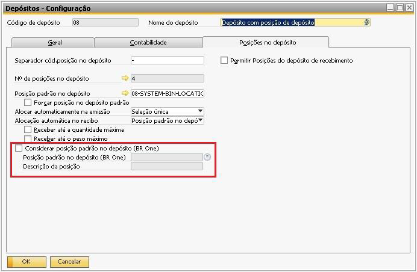{kind=link}
O campo para definição da posição será habilitado quando a opção Considerar posição padrão no depósito (BR One) estiver ativa. Se marcada, toda saída de insumos irá considerar essa posição se o depósito utilizado for o configurado.
Multi-filial
Se a base do cliente for multi-filial, será recuperada a filial a ser usada baseada no depósito da OP.
Conta contábil
A conta contábil que será usada é recuperada automaticamente. É considerado o número que estiver na conta Conta de material em processo. Para maiores informações, consultar o tópico de Determinação de Conta Contábil.
Estorno de produção
A saída de insumos pode ser estornada na tela de Estornos de produção. Nesta janela é possível realizar os estornos de entradas de PA, saídas de insumos e estorno por refugo.
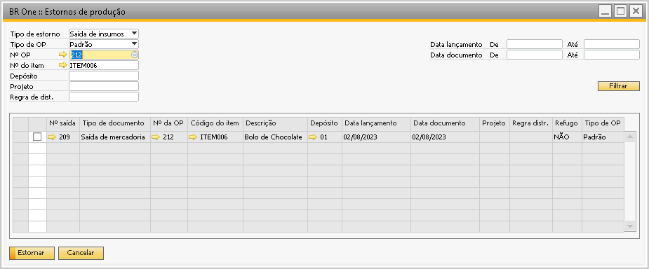{kind=link}
Os campos do cabeçalho servem como filtro. O resultado será trazido nas linhas. A primeira coluna possui campos de seleção. O usuário irá selecionar as linhas que deseja estornar e irá pressionar o botão Estornar.
Ao estornar uma saída de mercadoria, será feito o lançamento de uma entrada de mercadoria com os mesmos valores da saída e os documentos serão vinculados.
Entrada de produto acabado
Nesta tela é possível realizar a entrada de produtos acabados.
Para realizar a entrada de produto acabado, basta informar a OP, o depósito e a quantidade.
O CFL do campo Nº ordem produção será carregado da seguinte forma:
Campo Vazio: Apresentará as 100 primeiras OPs para seleção.
Campo com: Apresentará todas as OPs disponíveis para saída de insumos.
Campo com Filtro: Apresentará todas as OPs de acordo com o filtro informado.
OPs que possuem a flag ignorar no fechamento de custos marcada não serão carregadas no CFL.
Para o campo Depósito, caso a base seja multi-filial, só poderão ser selecionados depósitos que pertençam à mesma filial do depósito informado na OP.
Caso a tela de entrada de produto acabado seja aberta por dentro da OP, os campos Nº ordem produção, Depósito, Nº do item , Data lançamento e Data documento já virão preenchidos. Outras informações para validação estarão disponíveis na tela como Custo unitário e Saldo restante. Desta forma a única informação que o usuário precisa preencher é o campo Quantidade, que será preenchida com a quantidade de PA.
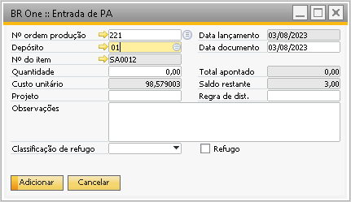{kind=link}
Caso o usuário tente adicionar uma entrada de PA e as contas contábeis Conta de material em processo e/ou Conta GGF arbitrado estiverem com a flag Bloquear lançamento manual ativa, a seguinte mensagem será exibida:
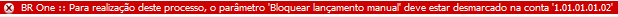{kind=link}
BR One :: Para realização deste processo, o parâmetro *Bloquear lançamento manual deve estar desmarcado na conta x.
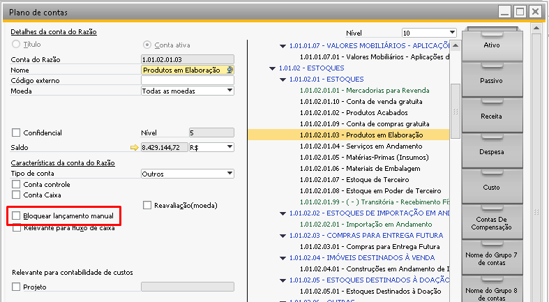{kind=link}
Se todos os componentes da OP estiverem com a flag Cancelado marcada, não será possível realizar a entrada de PA e a seguinte mensagem será exibida:
{kind=link}
BR One :: Todos os componentes da OP estão cancelados. Não é possível realizar a entrada de PA nessas condições, pois não existe custo para o PA.
Essa situação acima pode ser revertida, marcando a flag Permitir a entrada de PA sem componentes ativos (custo zero).
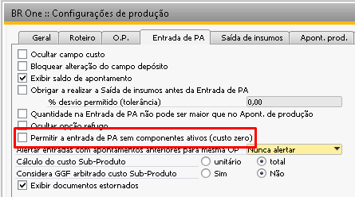{kind=link}
Ao realizar uma entrada de produto acabado, é feita uma entrada de mercadoria com o item produzido pela OP.
Além disso, ocorrem outros processos internamente, conforme segue abaixo.
Depósitos localizados
Para depósitos localizados, a quantidade da entrada de mercadoria realizada através da entrada de produto acabado poderá ser alocada na posição definida como padrão do BR One na tela de Depósitos – Configuração: Caso o campo não seja configurado, o procedimento nativo da aplicação será utilizado.

O campo para definição da posição será habilitado quando a opção Considerar posição padrão no depósito (BR One) estiver ativa. Se marcada, toda entrada de produto acabado e saída de insumos irá considerar essa posição se o depósito utilizado for o configurado.
Na entrada de mercadoria, constará a quantidade atribuída à posição na coluna Alocação de posição no depósito.
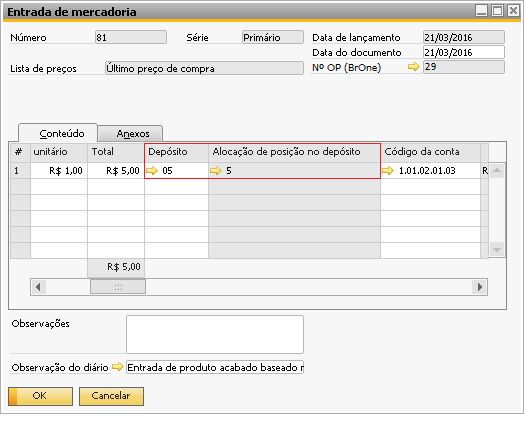{kind=link}
Caso não seja definida uma posição padrão e o usuário tente realizar uma entrada de mercadoria, a seguinte mensagem será exibida:
{kind=link}
BR One :: (-10) 14100000341 – O item alocado completamente X na posição no depósito Y
Se uma posição padrão BR One for configurada e não houver saldo suficiente para o componente, a seguinte mensagem será exibida:
{kind=link}
BR One :: Quantidade selecionada ultrapassa quantidade disponível para item em posição padrão no depósito (BR One).
Validação de quantidade ocorrerá na entrada de produto acabado, saída de insumos (baixa manual ou por explosão) e na tela de seleção de lotes e séries, desde que a configuração para considerar posição padrão do depósito (BR One) estiver ativa e o depósito do processo for o configurado.
Quando for feito o estorno da Entrada de PA ou Saída de Insumos, a localização utilizada será a posição padrão BR One, caso ela esteja marcada.
Multi-filial
Se a base do cliente for multi-filial, recupera a filial a ser usada baseada no depósito da OP.
Rateios de custo de terceiros
Se, para esta OP, existirem rateios pendentes no momento em que é realizada a entrada de PA, o valor desses rateios será considerado no preço do item da entrada. São considerados pendentes os rateios não cancelados e que não estejam marcados como contabilizados.
Se a entrada de PA for realizada com sucesso, os rateios usados no cálculo do preço do item serão marcados que foram contabilizados e serão vinculados à entrada de PA correspondente.
Para considerar o valor do rateio no custo do item, será realizada uma reavaliação de estoque, do tipo débito/crédito. Abaixo segue a origem dos dados da reavaliação:
O nº do item será do item que foi feita a entrada de PA.
O depósito será o depósito informado na entrada de PA.
A quantidade será igual a quantidade informada na entrada de PA.
O valor da reavaliação será o valor do rateio de custo de terceiro
A conta contábil será a conta do item não estocável (serviço) da linha da NF de entrada.
Em relação a conta contábil utilizada na reavaliação, o motivo é que ao inserir a NF de um item não estocável, a conta utilizada é a conta de despesa. Após inserir a NF, o valor do serviço fica pendente nesta conta de despesas. Quando é feita a reavaliação, é utilizada a conta do item de serviço para repassar esse valor pendente para o custo do item do PA. Assim, zerando o valor da conta despesa repassando o valor para o custo do item.
Conta contábil
A conta contábil que será usada é recuperada automaticamente. É considerado o número que estiver na conta Conta de material em processo. Para maiores informações, consultar o tópico de Determinação de Conta Contábil.
Considerações sobre o processo de Baixa por explosão / Refugo
No processo de entrada de PA, é feita uma saída de mercadoria para os itens que na OP, possuem o método de baixa por explosão. Se a opção Refugo estiver marcada, não será feita a entrada e só será feita a saída de mercadorias. No caso de uma baixa por explosão, é referenciada na saída de mercadoria a entrada de produto acabado que a originou. No caso de um refugo, a saída de mercadoria é marcada como refugo.
Caso ao tentar realizar uma Entrada de PA como refugo, a seguinte mensagem será exibida:
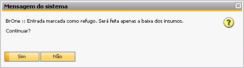{kind=link}
BR One :: Entrada marcada como refugo. Será feita apenas a baixa dos insumos. Continuar?
Se for clicado em Sim, será realizada apenas a baixa dos insumos cujo método de baixa seja Baixa por explosão. Caso esses componentes não sejam itens de estoque ou o depósito seja de envio direto, a seguinte mensagem será exibida:
{kind=link}
BR One :: Não existem itens aptos para serem refugados.
Itens administrados por nº de série
Os itens que são administrados por número de série são ignorados e não é feita a baixa por explosão para estes itens.
Primeiro apontamento
Se a baixa por explosão for a primeira para a OP, junto a quantidade será somado também a quantidade fixa do item.
Itens administrados por lotes
Para os itens que são administrados por lotes é feita a baixa dos lotes por FIFO (lotes que entraram primeiro saem primeiro). Para isso são consideradas as datas de vencimento e a data de lançamento do lote.
Apontamento de produção
Nesta janela são realizados os apontamentos de tempo de produção.
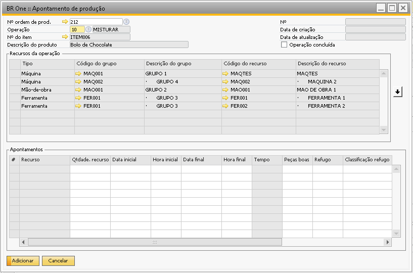{kind=link}
Os apontamentos são criados por ordem de produção e operação. Para adicionar um novo registro de apontamento, ao abrir a tela de apontamento por dentro da OP o campo Nº ordem de prod. já vem preenchido com a OP e o usuário informa qual a operação será apontada.
Quando a tela não é aberta por dentro da OP, é necessário preencher a OP, Operação e dar um tab, a tela mostrará na parte superior da grid todos os recursos da operação informada. Caso houver recurso alternativo e a opção
Permitir edição após liberação estiver selecionada os recursos alternativos também serão apresentados para apontamento.
Para realizar um apontamento de horas, basta selecionar o recurso da lista que deseja apontar e pressionar o botão com uma seta para baixo que fica na lateral da tela:
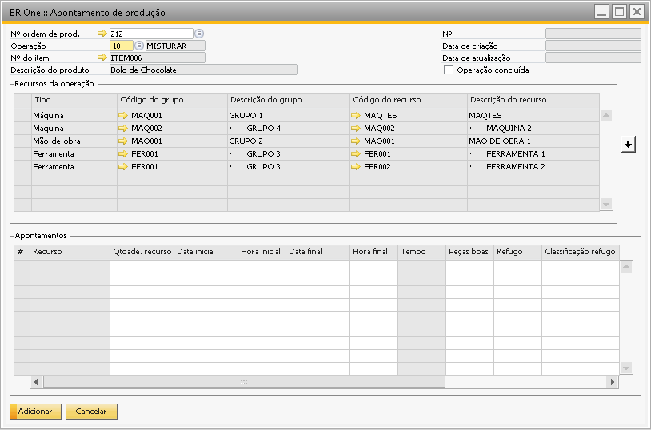{kind=link}
O recurso será enviado para as linhas abaixo, onde é possível especificar o tempo utilizado naquele recurso, a quantidade de peças boas, quantidade de refugo e status.
Na coluna status, deve ser especificado apenas o status inicial do recurso. Para o valor de status só será possível especificar os status que forem da categoria Produção ou Retrabalho.
Quando o apontamento for para o recurso do tipo mão-de-obra também é necessário que seja informado um operador na linha.
Caso o usuário tente realizar o apontamento para um recurso onde ele já possua apontamento em aberto, isso é, data e hora final sem preencher, uma mensagem será exibida indicando ao usuário qual OP possui apontamento para o recurso em aberto:
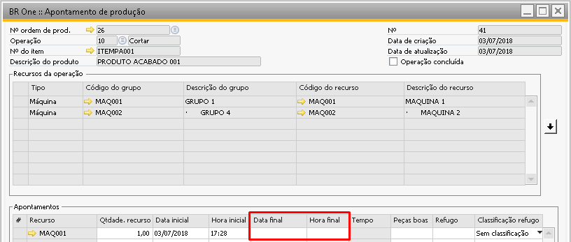{kind=link}
BR One :: Recurso *x possui apontamento aberto. Para iniciar um novo apontamento, é preciso encerrar os existentes. N° OP: x, Seq. Operação: x, Operação: x*
{kind=link}
Não é possível realizar apontamento para o mesmo recurso no mesmo horário em que eles já tiveram outros apontamentos. Por exemplo:
Se um recurso X for apontado com data de início 01/01/2020 às 14:00 e a data final 01/01/2020 às 15:00, nenhum outro apontamento para o mesmo recurso com hora inicial ou final poderá ser feito dentro desse intervalo, só a partir das 15:01 ou anterior a 13:59. Se o usuário tentar inserir um recurso sobrescrevendo um já apontado e a flag Permite múltiplas ordens no cadastro do recurso não estiver marcada, a seguinte mensagem será exibida, indicando a linha do apontamento que precisa ser alterada e o nº do apontamento que já existe:
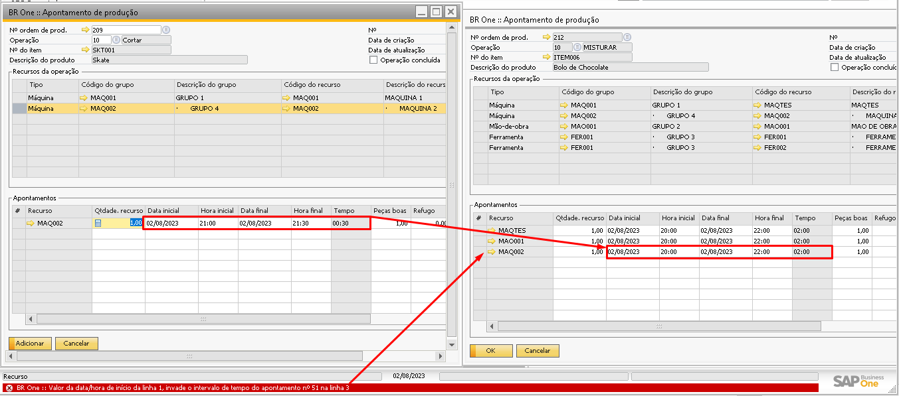{kind=link}
BR One :: Linha x: Intervalo de tempo sobrescreve intervalo já existente – [Apontamento existente nº x].)
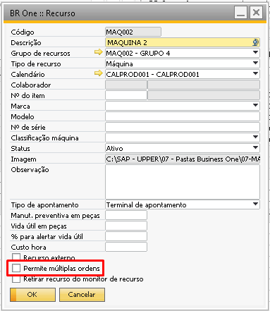{kind=link}
Caso no cadastro do recurso o parâmetro Permite múltiplas ordens seja selecionado o apontamento subscrevendo a data e horário poderá ser adicionado.
{kind=link}
Não poderão ser apontados recursos com data inicial e final com data futura (data e hora maior que a data e hora atual).
Não é permitido realizar apontamentos para recursos onde a coluna esteja com a opção cancelado, mas caso este recurso cancelado tenha recurso alternativo, o recurso alternativo pode receber apontamento. Lembrando que o recurso alternativo apenas irá aparecer caso a opção Permitir edição após liberação no cabeçalho da OP estiver selecionada
Caso o usuário tente excluir uma linha que já tenha sido contabilizada no fechamento de custos, a seguinte mensagem será exibida:
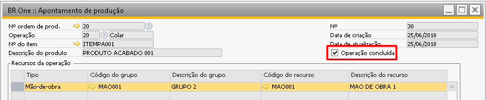{kind=link}
BR One :: Linha já contabilizada no fechamento de custos.
No cabeçalho da tela de Apontamento de produção, existe o campo Operação concluída para identificar se o apontamento está concluído.
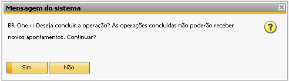{kind=link}
Este campo aparecerá bloqueado caso o usuário não tenha as autorizações necessárias e poderá ser alterado apenas automaticamente por meio do processo de apontamento.
A conclusão do apontamento será realizada quando todos os recursos da operação estiverem apontados e a quantidade concluída dos recursos somada seja maior ou igual à quantidade planejada da Ordem de produção. Então, ao atualizar o apontamento, será exibida a seguinte mensagem:
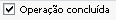{kind=link}
BR One :: Deseja concluir a operação? As operações concluídas não poderão receber novos apontamentos. Continuar?
Caso seja selecionado Sim, o apontamento irá atualizar o campo Operação concluída.
Se o usuário tiver autorização para marcar a flag, ao marcá-la, a seguinte mensagem de confirmação será exibida:
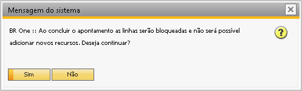{kind=link}
BR One :: Ao concluir o apontamento as linhas serão bloqueadas e não será possível adicionar novos recursos. Deseja continuar?
Após a flag ser marcada, a grid Apontamentos será bloqueada para edição e não será possível inserir novos apontamentos e nem apagar linhas já existentes.
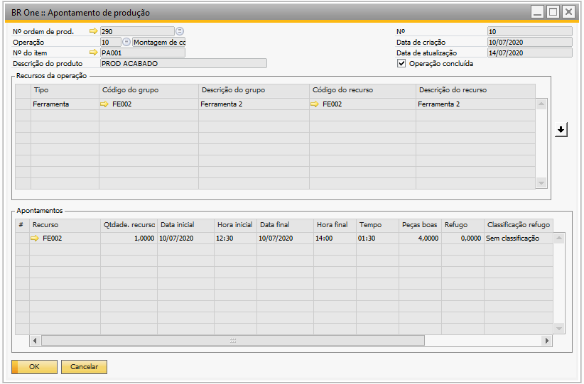{kind=link}
Caso o campo Obrigar a iniciar/parar recursos de uma mesma operação simultaneamente estiver marcado, as quantidades dos apontamentos serão agrupadas de acordo com a data e hora final.
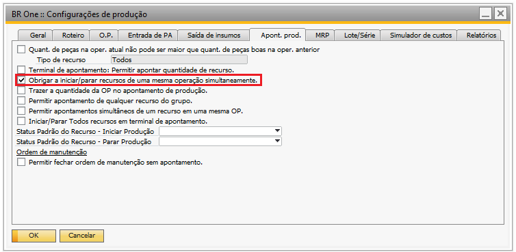{kind=link}
Caso o campo não esteja marcado, será recuperada a soma de todas as peças boas dos apontamentos.
Esse processo também pode ser realizado através do Terminal de apontamento pela opção Parar produção.
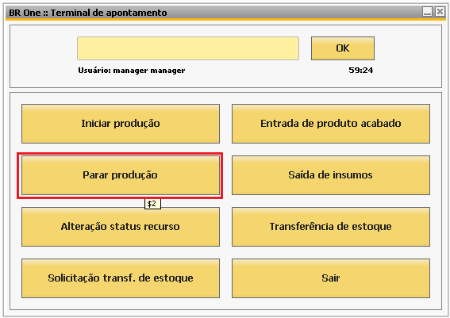{kind=link}
Ao parar a produção, definir uma quantidade de peças boas superior ou igual à quantidade planejada na OP e selecionar todos os recursos da operação, ao clicar em Parar, a mesma mensagem de confirmação será exibida e ao clicar em Sim, o apontamento será atualizado com o campo Operação concluída marcado.
As operações marcadas como Operação concluída não aparecerão no terminal de apontamento para iniciar produção. E nos casos onde a operação foi concluída fora do
Terminal de apontamento, a operação não será exibida no processo Parar produção.
Caso seja necessário buscar algum apontamento, os campos disponíveis para filtro são os campos: Nº OP, Operação e Nº Apontamento.
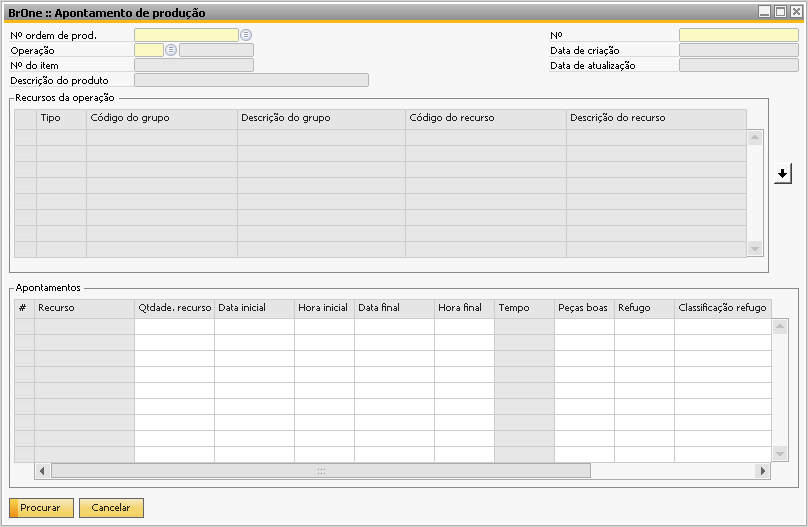{kind=link}
Para excluir um apontamento, clique com o botão direito e em Remover, mas só poderão ser removidos os apontamentos quando não houver nenhum apontamento de horas na grid Apontamentos.
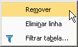{kind=link}
Se a flag Quant. de peças na oper. atual não pode ser maior que quant. de peças boas na oper. Anterior estiver marcada, o usuário não poderá excluir um apontamento que tiver horas apontadas na operação seguinte. Caso o usuário tente remover, a seguinte mensagem será exibida:
{kind=link}
BR One :: Impossível remover apontamento pois existem horas apontadas para operação seguinte à operação atual.
Após clicar em Remover, a seguinte mensagem será exibida:
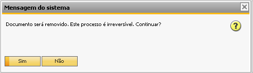{kind=link}
Documento será removido. Este processo é irreversível. Continuar?
Ao clicar em Sim, o apontamento será removido.
Esta tela possui configurações que podem alterar seu comportamento. Para maiores detalhes é possível consultar a aba Apont. prod. da tela de Configurações de produção.